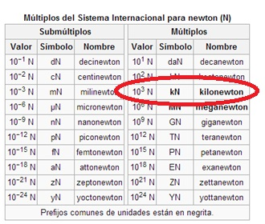

Para entender el Kilonewton es necesario saber primero que es un Newton: es la unidad de fuerza en el Sistema Internacional de Unidades, nombrada así en reconocimiento a Isaac Newton por su aportación a la física, especialmente a la mecánica clásica.
El newton se define como la fuerza necesaria para proporcionar una aceleración de 1 m/s2 a un objeto de 1 kg de masa.1
Es una unidad derivada del SI que se compone de las unidades básicas:
